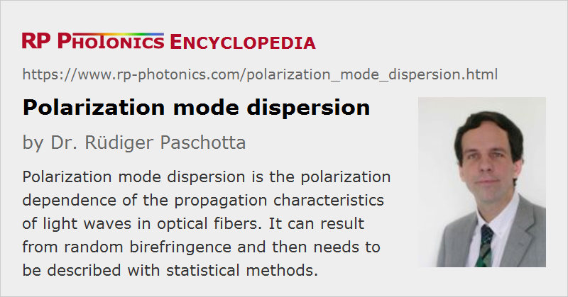

Polarization Mode Dispersion
Acronym: PMD
Definition: the polarization dependence of the propagation characteristics of light waves in optical fibers
More general term: dispersion
German: Polarisations-Dispersion
Categories: fiber optics and waveguides, lightwave communications
How to cite the article; suggest additional literature
Author: Dr. Rüdiger Paschotta
In optical fibers, there is usually some slight difference in the propagation characteristics of light waves with different polarization states. A differential group delay can occur even for fibers which according to the design should have a rotational symmetry and thus exhibit no birefringence. This effect can result from random imperfections or bending of the fibers, or from other kinds of mechanical stress, and is also affected by temperature changes. Mainly due to the influence of bending, the PMD of a cabled fiber can be completely different from that of the same fiber on a spool. Modern fiber cables as used in fiber-optic links have been optimized for low PMD, but the handling of such cables can still have some influence.
The terms polarization mode dispersion (PMD) and differential group delay (DGD) are often used interchangeably, but sometimes with slightly different meanings. Some authors call the phenomenon PMD and consider DGD to be its magnitude. Others define PMD as the statistical standard deviation of DGD in some wavelength interval. Note that for optical fibers the DGD can have a substantial and complicated dependence on the optical wavelength.
Some authors use the term second-order PMD for the derivative of the differential group delay with respect to angular frequency [2] – although there is actually no second-order derivative involved.
Detrimental Effects in Communication Systems
Polarization mode dispersion can have adverse effects on optical data transmission in fiber-optic links over long distances at very high data rates, because portions of the transmitted signals in different polarization modes will arrive at slightly different times. Effectively, this can cause some level of pulse broadening, leading to inter-symbol interference, and thus a degradation of the received signal, leading to an increased bit error rate.
In principle, one could determine the so-called principle polarization states of a fiber span, and inject the optical signals only into one such state. For a sufficiently narrow optical bandwidth, there would then be no pulse broadening, although for larger bandwidths there is a polarization-related contribution to chromatic dispersion (with its sign being different for the two principle states). However, this method is usually not practical, partly because the principle polarization states change with time.
Effects of polarization mode dispersion often need to be described statistically, concerning not only random temporal changes but also the dependence on the fiber length. For short fiber sections, the DGD is proportional to the fiber length. For longer sections, different portions of fiber contribute uncorrelated amounts of DGD, and the total r.m.s. value of the differential group delay scales only with the square root of the fiber length.
Reducing the Effects of PMD
Optimized Fibers
The first measure for reducing PMD is to choose an optical fiber with reduced PMD. Modern telecom fibers have fairly stringent PMD specifications, but fibers laid in the early 1990s often exhibit much stronger PMD, which is often not even specified.
In principle, the problem could be solved by using well-defined polarization states in polarization-maintaining fibers, but this approach is usually not practical for various reasons: it would not only be necessary to use the more expensive and more lossy polarization-maintaining fibers for all components (including e.g. fiber amplifiers), but also the polarization directions would have to be aligned at many interfaces.
PMD Compensation
For achieving the highest possible bit rates, particularly with older fibers and in long fiber-optic links, it can be necessary to compensate the polarization mode dispersion. There are devices for introducing an adjustable amount of PMD in order to compensate PMD of a fiber-optic link. Essentially, such a device may contain
- a fiber polarization controller, followed by
- a polarizer and a variable optical delay line which is applied only to light of one polarization direction, and
- another polarizer acting as a beam combiner.
By adjusting the delay line, one can minimize the overall PMD.
Note that temperature changes can make the PMD effect time-dependent; for highest data rates, it may therefore be necessary to apply an automatic feedback system. If the system has multiple wavelength channels (→ wavelength division multiplexing), the compensation may have to be done separately for each channel, because the effect is wavelength dependent.
Minimizing the Sensitivity to PMD
Another strategy can be to limit the capacity of each transmission channel, but using many different channels in a single fiber, e.g. with the technique of wavelength division multiplexing.
There are also advanced modulation schemes with reduced symbol rate (for a given bit rate), which are less sensitive to PMD.
Suppliers
The RP Photonics Buyer's Guide contains 4 suppliers for polarization mode dispersion measurement and compensation equipment.
Questions and Comments from Users
Here you can submit questions and comments. As far as they get accepted by the author, they will appear above this paragraph together with the author’s answer. The author will decide on acceptance based on certain criteria. Essentially, the issue must be of sufficiently broad interest.
Please do not enter personal data here; we would otherwise delete it soon. (See also our privacy declaration.) If you wish to receive personal feedback or consultancy from the author, please contact him e.g. via e-mail.
By submitting the information, you give your consent to the potential publication of your inputs on our website according to our rules. (If you later retract your consent, we will delete those inputs.) As your inputs are first reviewed by the author, they may be published with some delay.
Bibliography
| [1] | N. Gisin et al., “Polarization mode dispersion of short and long single-mode fibers”, IEEE J. Lightwave Technol. 9 (7), 821 (1991), doi:10.1109/50.85780 |
| [2] | H. Kogelnik et al., “Jones matrix for second-order polarization mode dispersion”, Opt. Lett. 25 (1), 19 (2000), doi:10.1364/OL.25.000019 |
| [3] | P. Williams, “PMD measurement techniques and how to avoid the pitfalls”, J. Opt. Fiber Commun. Rep. 1, 84 (2004), doi:10.1007/s10297-004-0010-4 |
| [4] | J. P. Gordon, “Statistical properties of polarization mode dispersion”, J. Opt. Fiber Commun. Rep. 1, 210–217 (2004), doi:10.1007/s10297-004-0003-3 |
| [5] | D. A. Nolan et al., “Fibers with low polarization-mode dispersion”, J. Lightwave Technol. 22 (4), 1066 (2004), doi:10.1109/JLT.2004.825240 |
| [6] | A. Mecozzi, “Theory of polarization mode dispersion with linear birefringence”, Opt. Lett. 33 (12), 1315 (2008), doi:10.1364/OL.33.001315 |
| [7] | ITU standard G.666 (07/05), “Characteristics of PMD compensators and PMD compensating receivers”, International Telecommunication Union (2005) |
See also: fibers, fiber-optic links, polarization-maintaining fibers, birefringence
and other articles in the categories fiber optics and waveguides, lightwave communications
|  |
If you like this page, please share the link with your friends and colleagues, e.g. via social media:
These sharing buttons are implemented in a privacy-friendly way!